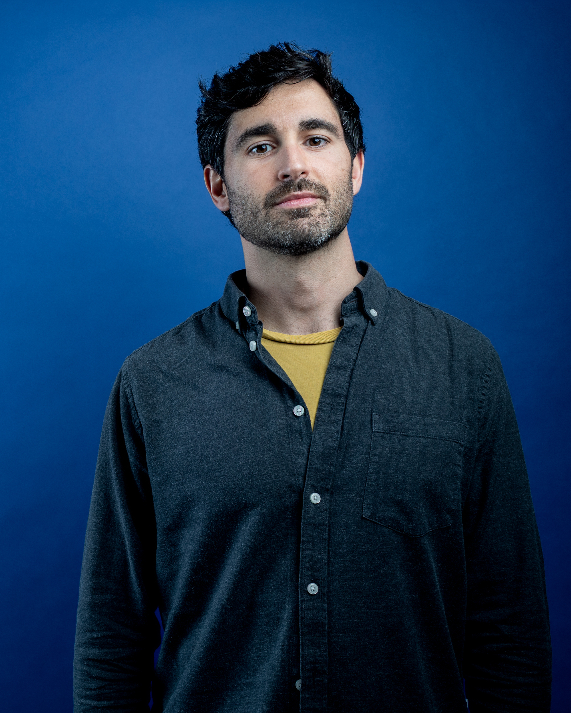

Production & releases
Equilibrium — Trip-Hop and Tech-House. Listen on Spotify below.
Press kit
Producer, DJ & MC
M.Conradi is a Munich-based producer, DJ, and MC. He started in Spain, pursuing both electronic music and Hip-Hop beatmaking and writing. Since 2003, he has performed live across the underground scene as both a DJ and frontman.
This background gives him a level of confidence in the DJ booth that goes beyond just mixing tracks. He knows how to read and command a crowd, especially during peak-time, where his focus is purely on transmitting energy to the floor.
Today, his studio work focuses on Tech-House, alongside DJing in the local scene and leading the Funky/Hip-Hop group One Million Likes. All these influences converged in his album Equilibrium, which moves from cinematic Trip-Hop to punchy club sounds.

Press kit
Producer, DJ & MC
M.Conradi is a Munich-based producer, DJ, and MC. He started in Spain, pursuing both electronic music and Hip-Hop beatmaking and writing. Since 2003, he has performed live across the underground scene as both a DJ and frontman.
This background gives him a level of confidence in the DJ booth that goes beyond just mixing tracks. He knows how to read and command a crowd, especially during peak-time, where his focus is purely on transmitting energy to the floor.
Today, his studio work focuses on Tech-House, alongside DJing in the local scene and leading the Funky/Hip-Hop group One Million Likes. All these influences converged in his album Equilibrium, which moves from cinematic Trip-Hop to punchy club sounds.
Studio production, club sets, and live performance — grounded in electronic music and Hip-Hop. Drop platform embeds or visuals below.
Equilibrium — Trip-Hop and Tech-House. Listen on Spotify below.
Live DJ sets on SoundCloud.
Buy and download releases (including Equilibrium) on Bandcamp — high-quality formats, direct support.

For press and bookings: conradimiguel@gmail.com